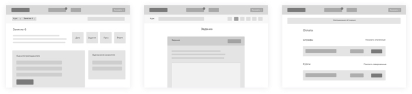
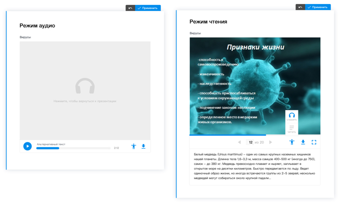

Outsource projects (2017) UI design and web development
tl;dr
- Империя Репетиторов / Tutors' Empire, platform for preparation to the russian Unified State Exam.
- E-book platform for creating interactive e-workbooks for schools.
- TriFit is a platform where professional fitness coaches can work with their clients remotely by providing them meal and workout plans. Learn more on a TRIFIT 21DAY website.
Империя репетиторов / Tutors' Empire
For this project I designed student's UI, using wireframes provided to me. And we used boooya uikit for this project.  Wireframes Plus, I did a html&css markup of some pages.
A student can enroll to several online classes where he or she will be able to join lectures and rate tutors after that, take tests, complete the assignments and get grades for them. On a dashboard he or she can see a rating among other students and a schedule.
E-book platform
My favorite project at that period. The projects has hundreds of screens, systems, details and elements inside, I was very exited to be a part of it.
 Architacture visualization of a book UI
The goal of this project is a development of a platform for creating, distributing and using e-books, primarily for schools.
Architacture visualization of a book UI
The goal of this project is a development of a platform for creating, distributing and using e-books, primarily for schools.

Starting page that I was working on This platform provides various tools for representing information in different formats like texts, audio, video, presentations. More than that, you can create tasks and tests such as multiple choice tests, drag-n-drop, graph and matrix builders and so on.
Interface Design
I took part in adapting UI elements for different screen sizes, completing designs of some elements or their different states, designing new types of tasks, media representation tools and was working on presentation materials.
For example, I worked with text editing tool:

Media Player
As I said the platform provides different tools for media files representation (images, audio, video and presentations). I was given a task to design a media player for presentations and refine and unify UI of video and audio players.
So, this is how a player for presentations looks in an IDE. You can download a presentation, switch to a full-screen mode and so on. A hover on a progressbar shows a slide's preview. When editing, slides can be swapped, deleted or added new ones. You can also add an explanatory text to the slide.

Player for presentations inside IDE
The player has audio and reading modes for users with disabilities.

Audio and reading modes
For clarity I documented all the states of media players for audio, video and presentations.
 States of media players
States of media players
Documentation
Most of my assignments related to this project were to work with the documentation. I needed to show all the screens, the states of the components of the system (and finish them, if something was missing).
 Documentation example
Documentation example
Trifit
I worked a little on wireframing and UI, but that wasn't used for the actual project. So my biggest contribution was a pages' markup. You can find it here on github.
 Work on recipe design
Work on recipe design